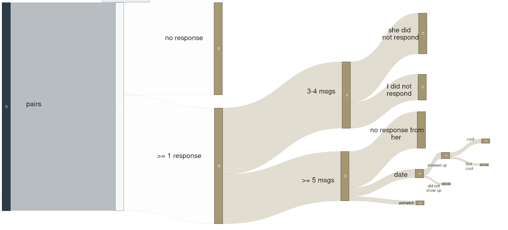

2020-11-14
A month on tinder in Poland: report with numbers and statistics
Once upon a time, when you could still go out freely, without worrying for your life, I decided to do a little observation, experiment maybe. Start using Tinder for a month. There are plenty of experiments like that already, but in my home country, Tinder and dating scene are a bit different than in the States or the West in general. Imagine that people here sometimes use Tinder for something other than sex. Interesting, right? Hence, I wanted to experience that by myself and write my own version.
Some assumptions
First one was to just have certain standards. You can lie to yourself all you like, looks matters. That's it. I could swipe everyone right, but so what? If there's no attraction whatsoever, why waste the other person's time and potentially hurt them? For what? To get laid? No thank you. No offence to anyone, it's just my preference and how I feel. I just know what I like.
Second of all, I bought Tinder Gold. My time is quite valuable for polish standards and as far as I know, unless you are model-tier man looks-wise, it's way harder to get likes from women. For your average guy, it's at least a 10:1 ratio - for every like you give, you can get at best around 1 like back if you are being lucky that is. I don't know about other countries but that's the case in Poland, with some statistics looking WAY worse. I didn't have that much time every day, therefore I just bought Gold and see who liked me and select pairs from this group. Less effort on my side, which is good.
Third of all, I try to get a date as fast as I can. Okay, not within first few messages which could be creepy, but writing two weeks just to get rejected is also out of question. So just common sense I'd say.
How did I select my pairs?
I gathered a small statistic and from around 25 likes that I got, around half was a no from me. This was influenced by multiple reasons.
- Obesity - it's just not my thing, if it's yours - go for it, not for me though, cannot lie here.
- Height above 175 cm. While I personally do not mind if a woman is a similar height or even higher than me (actually this turns me on a lot), as far as I know, it's very hard to attract a woman with such a trait on Tinder. In real life - that's a different story. I just don't want to waste your time.
- Descriptions mentioning FWB deals or just sex. This was about potentially finding a long term partner.
- Descriptions/photos indicating eg. drug abuse or stuff like that. Just your common sense in general.
Overall I think these were not some blown-out requirements I'd say. Just your normal woman, smart one preferably.
Also about point 1): Here in Poland, we have this joke that a woman ends at 60 kg. Well, I don't agree with this. I don't care that much how much you weight. I care for the confidence you emit and if it just looks good, if it all fits together. Who cares about the scale.
It might be worth adding that I rather prefer brunettes to blondes. Ya know the type, dark hair, strong eyebrow. Always been my thing, but it didn't mean that I disqualified people not fitting these criteria. Not even once.
Sometimes I also swiped left only because of the description - if I found something really interesting in it.
About me
Enough with the assumptions and requirements. Now, who am I tho?
First of all: 21, male. I've been working in the IT industry for 3 years already. I make around 50k USD after-tax per year while living in Poland, where costs of living are considerably lower. Just for reference 50k yearly is around 4x the average in Poland. Overall I think for my age bracket, regardless of the location, I'm doing quite fine. On tinder, I put my position as Product Engineer.
I have lots of hobbies I'd say. Constantly on the move. Love concerts, sports, gym. I'm interested in art, painting (suck at it tho), sometimes I travel a bit, mostly Europe so far. I love cleaning, cooking a bit, reading and creating stuff by welding, metalworking or writing. Other than that I'm a minimalist and eco freak that loves adrenaline so bungee or parachute jumping is a go for me. I think my life is not boring.
As far as my observations go, I'm outspoken and have no issue with meeting new people, connecting with them. Being shy is not something that I do.
Before this experiment, I already was in other relationships so this wasn't my first encounter with women either.
However arrogant it may sound, for my age, I'm doing damn fine. It just is what it is, describing the facts.
When it comes to the visual side of things: I'm 178 cm. I don't care tho. I've dated women similar in height, it turns me on as I said previously. If she's taller than you, it just gets a bit tricky kissing, but it's nothing that can't be overcome.
I'd say my beard is quite nice and thick, same with hair and eyebrows. In the cons: T-level is high so my hairline receded a bit compared to when I was a kid.
Dark eyes, overall quite dark. In the clubs, I'm often mistaken for Italian/Spanish person. Same happened when I was in Italy.
The figure is quite okay. Did powerlifting back in the days, so got some muscle here and there, strong back and forearms, but definitely not ripped.
{kind=link}
Some numbers
After a month I had 200+ likes. Out of which I decided to pair with 97 people.
Not once has a woman written first. It was always me.
43 didn't even respond. 54 did.
Out of 54, 31 was out after 3 to 4 messages, in which 19 cases they did not respond in 12 it was me
Remaining 23 cases - we exchanged at least several massages.
17 girls just stopped responding, out of nowhere.
2 times I had to unmatch coz. 1st one was serious about marriage and visibly crazy, withing first massages, the second one was very very very beautiful and my type 100%, but damn, my back hurt so much from carrying the whole conversation.
Out of these, I got 4 dates. 1 stopped responding when it was the day of our meeting.
3 showed up. In 2 cases it was nice and shiny, in 1 case it didn't as she was just a different person in real life.
This graphic sums it up:

The conversion rate of about ~3%. A bit similar to business/sales. Anyway. I got to know some interesting people out of this, which makes it worth it.
Insights
First of all, a lot of these talks are daaaaaamn hard. You had to carry the conversation until you found a spot to hook them in. Something that gets them talking, some interests of theirs or something. After that, it's all easier.
Some percentage of matches wasn't that kind/nice at the beginning. Trying to shit on your head and see if it works, if you let them. After a proper rebuttal or an equally rude response, they always went back to being nice.
The description doesn't change the number of likes I get, it changes slightly the type of girls who give the likes.
Overall I think I'm slightly above average looks-wise. Some of the women I know have complimented me honestly that I'm handsome and it wasn't my grandmother.
When you take this all into account... A question arises? How does the situation look like for average or below average guys on Tinder in Poland? I don't want to know, but honestly, it kinda makes me understand a bit, how frustrated some men must feel and why they hate so much on tinder.
Is it good or is all of this bad? I won't answer this for you - it's your choice. I just describe facts and numbers here.
Is Tinder good or bad? Again - answer it yourself. For me, it's just suboptimal. 3 dates for a month of using it. I can get 3 dates by going out to a dancing/night club once. In real life, my conversion rate is way higher. Gestures, body posture, smell, voice, it all comes into play in real life. On tinder, you are just your photos and a text. That's it.
I'm also not sure if I like this culutre. Couple of seconds, quick judge, beng. Next one. A whole person simplified to one photo. Well, it is what it is I guess.
In my opinion, if you are just a shy, average polish guy, your experience with Tinder might not be pleasant.
Again - I don't say any of this is inherently good or bad. I just say what works better for me and describe a certain trend. What to do with it further - that's up to you to decide.
Also, before I finish - a little disclaimer for all of you who are foreigners. These numbers do not have any reflection on how Tinder wll look for you in Poland. In a recent study that I read somewhere, Polish women were among top 3 in UE who are most friendly to men outside their country. What does that mean? You have it easier.
That's it for today folks.